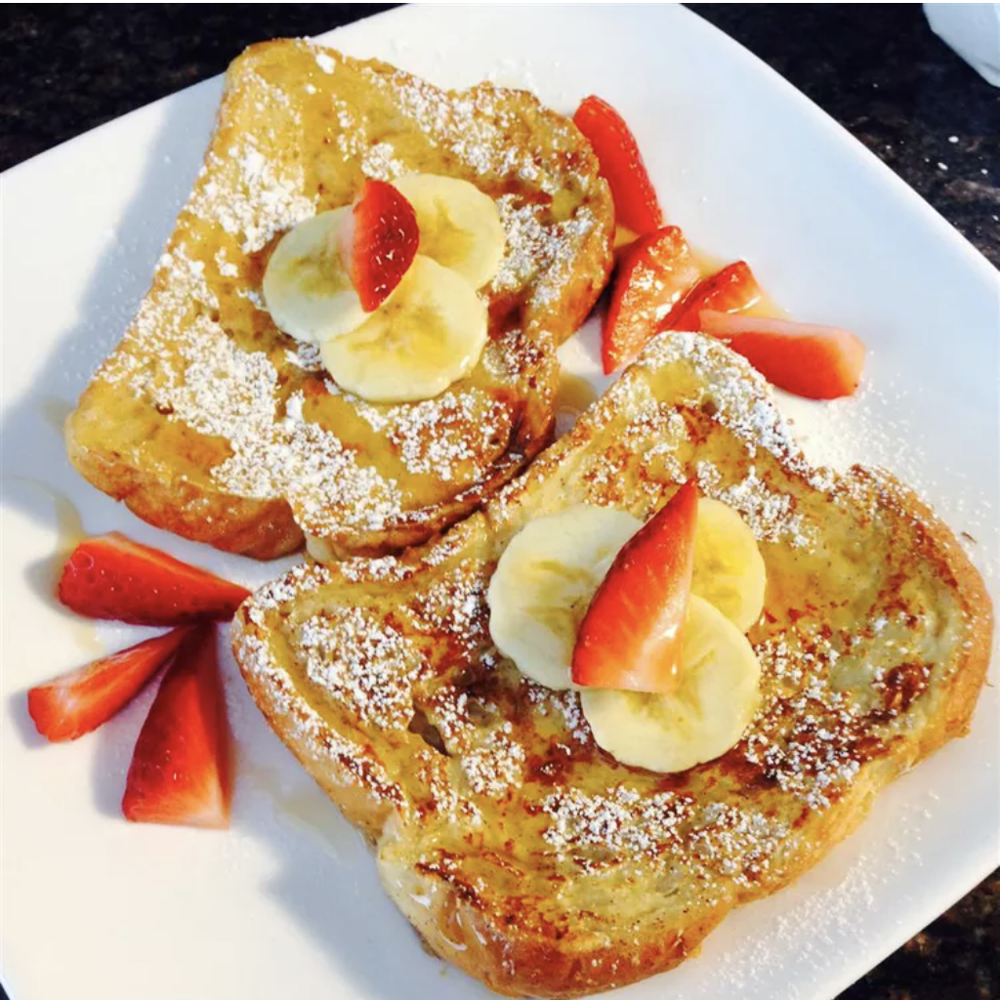

Fluffy French Toast

Description
Fluffy and Tasty to make French Toast.
Use all purpose flour to create an amazing texture while adding
flavours to the french toast. An amazing breakfast recipe to follow.
Ingredients
- ¼ cup all-purpose flour
- 1 cup milk
- 3 eggs
- 1 tablespoon white sugar
- 1 teaspoon vanilla extract
- ½ teaspoon ground cinnamon
- 1 pinch salt
- 12 thick slices bread
Steps
- Measure flour into a large mixing bowl. Slowly whisk in milk.
Whisk in eggs, sugar, vanilla extract, cinnamon, and salt until smooth.
- Heat a lightly oiled griddle or frying pan over medium heat.
- Soak bread slices in milk mixture until saturated.
- Working in batches, cook bread on the preheated griddle or pan until golden brown on each side. Serve hot.